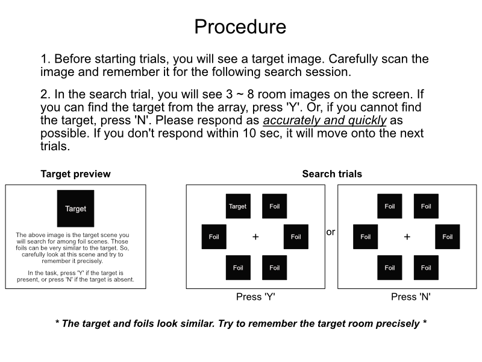

<!DOCTYPE html>
<html>
  <head>
    <title>PsychExp</title>    
    <script src="https://unpkg.com/jspsych@7.1.2"></script>
    <script src="https://unpkg.com/@jspsych/plugin-html-keyboard-response@1.1.0"></script>
    <script src="https://unpkg.com/@jspsych/plugin-html-button-response@1.1.0"></script>
    <script src="https://unpkg.com/@jspsych/plugin-image-keyboard-response@1.1.0"></script>
    <script src="https://unpkg.com/@jspsych/plugin-fullscreen@1.1.0"></script>
    <script src="https://unpkg.com/@jspsych/plugin-preload@1.1.0"></script>
    <link href="https://unpkg.com/jspsych@7.1.2/css/jspsych.css" rel="stylesheet" type="text/css" />
    <script src="factorial_noRandom.js"></script>
    <script src="make_condition.js"></script>
    <script src="make_stim_position.js"></script>
    <script src="jspsych-psychophysics.js"></script>
    <script src="https://cdnjs.cloudflare.com/ajax/libs/underscore.js/1.13.2/underscore-min.js" integrity="sha512-anTuWy6G+usqNI0z/BduDtGWMZLGieuJffU89wUU7zwY/JhmDzFrfIZFA3PY7CEX4qxmn3QXRoXysk6NBh5muQ==" crossorigin="anonymous" referrerpolicy="no-referrer"></script>
    <script src="https://cdnjs.cloudflare.com/ajax/libs/html2canvas/1.3.4/html2canvas.min.js"></script>
  </head>
  <body></body>
  <script>

    const jsPsych = initJsPsych();
    var timeline =[];

    /* condition */
    var factors = {
      dist: [11],
      set_size: [3,4,6,8],
      target_ox: [0,1], // 0=target absent, 1=target present
      dimension: [-1,1],
      direction: [-1,1]
    }
    var cond_list = factorial_noRandom(factors);
    var target_coord = '0_0';
    var jitter = [-1,0,1];
    var n_block = 4;
    var stim_dir = 'stimuli/bedroom11_ver4_d0.5/'
    var position_idx = _.range(0,_.max(factors.set_size));
    var exp_cond = make_condition(cond_list, jitter, target_coord, n_block, stim_dir, position_idx);     

    // /* save condition file locally */
    // function download(content, fileName, contentType) {
    //   var a = document.createElement("a");
    //   var file = new Blob([JSON.stringify(content)], {type: contentType});
    //   a.href = URL.createObjectURL(file);
    //   a.download = fileName;
    //   a.click();
    //   URL.revokeObjectURL(a.href)
    // }
    // download(exp_cond, 'condition.txt', 'text/plain');
    
    /* conset_page */
    var consent_page = {
      type: jsPsychHtmlButtonResponse,
      stimulus: function(){                            
          var html = 
          '<p area-selected="font-size:15px;"> Press Agree to participate in the experiment.</p>'+                          
          '<embed src="stimuli/consent_online_credit.pdf" style="width:80vw; height:70vh;"></embed>'
          return html;
      },
      choices: ['Agree'],        
      data: {disp_type: 'consent_page'}   
    }

    /* instruction */
    var instruction1 = {
      type: jsPsychHtmlButtonResponse,
      stimulus: html='',
      choices: ['Go to procedure'],
      data: {disp_type: 'inst_welcome'}
    }
    var instruction2 = {
      type: jsPsychHtmlButtonResponse,
      stimulus: html='',
      choices: ['Preview target'],
      data: {disp_type: 'inst_procedure'}
    }

    var target_preview = {
      type: jsPsychImageKeyboardResponse,
      stimulus: stim_dir+'000312.webp',
      choices: ['b'],
      data: {disp_type: 'target_preview'},
      prompt: "<p>The above image is the target scene you will search for among foil scenes.<br>"+
        "The foils can be very similar to the target.<br>"+
        "So, carefully look at this scene and try to remember it precisely.<br><br>"+
        "In the task, press 'Y' if the target is present, or press 'N' if the target is absent.<br>"+
        "Once you are ready to start, press 'B'.</p>"
    }

    /* preloading */
    var image_list = [];
    for(var i=0; i<625; i++){
      image_list.push('stim_dir/'+("000000"+i).slice(-6)+'.webp');
    }   
    var preload = {
      type: jsPsychPreload,
      images: image_list
    }
    
    /* search trial composition */
    // img position function
    function img_pos(array_size, radius, stim_size, cx, cy, jitter){      
      var angles = _.range(0, 360, 360/array_size);  
      var jittered_angles = _.map(angles, function(x){return x + jitter})  
      var start_XYs = [];
      for (var i of jittered_angles){  
        var x = cx + (Math.cos(i/180*Math.PI)*radius);
        var y = cy + (Math.sin(i/180*Math.PI)*radius);
        start_XYs.push([x,y]);
      }
      return start_XYs
    }    

    // draw function
    function prepare_stim(set_size, stim_pos, target_ox, target_path, nt_path, stim_size){  
      // img position
      var position = img_pos(8,200,84,500,400, Math.random(1)*45)
      // merge target path and nt path
      var stim_path = nt_path;      
      if(target_ox==1){ 
        stim_path = nt_path.concat(target_path);       
      }
      // make stim object
      var stim=[];  
      for (var i=0; i<set_size; i++){
        stim.push({
          obj_type: 'image',
          file: stim_path[i],
          image_width: stim_size,
          startX: position[stim_pos[i]][0],
          startY: position[stim_pos[i]][1]
        })
      }
      stim.push({
        obj_type: 'rect',
        startX: 500,
        startY: 400,
        width: 900,
        height: 700,
        fill_color: '#ffffff',
        show_end_time: 1000
      })
      // add central fixation
      stim.push({
        obj_type: 'text',
        font: "34px Arial",
        content: '+'
      })   
      return stim;
    }    

    var trial = {
      type: jsPsychPsychophysics,
      stimuli: function(){
        var stim_list = prepare_stim(
          jsPsych.timelineVariable('set_size'), jsPsych.timelineVariable('stim_position'),
          jsPsych.timelineVariable('target_ox'), jsPsych.timelineVariable('target_path'),
          jsPsych.timelineVariable('nt_path'), 84);
        return stim_list;
      },
      choices: ['y', 'n'], 
      canvas_width: 1000,
      canvas_height: 800,
      background_color: '#ffffff',
      trial_duration: 10000,
      data: {
        target_present: jsPsych.timelineVariable('target_ox'),
        config_type: jsPsych.timelineVariable('type'),        
        config_dir: jsPsych.timelineVariable('direction'),
        config_dim: jsPsych.timelineVariable('dimension'),
        set_size: jsPsych.timelineVariable('set_size'),
        disp_type: 'search_array'
      }
    }
    // var fix_cross = {
    //   obj_type: 'text',
    //   font: "34px Arial",
    //   content: '+'
    // }
    // var fixation = {
    //   type: jsPsychPsychophysics,
    //   stimuli: [fix_cross],
    //   choices: "NO_KEYS",
    //   trial_duration: 1000,
    //   canvas_width: 1000,
    //   canvas_height: 800,
    //   background_color: '#ffffff',
    //   data: {disp_type: 'iti1000'}
    // }
    
    var search_main1 = {
      timeline: [trial],
      timeline_variables: exp_cond[0]
    } 
    var search_main2 = {
      timeline: [trial],
      timeline_variables: exp_cond[1]
    }
    var search_main3 = {
      timeline: [trial],
      timeline_variables: exp_cond[2]
    }
    var search_main4 = {
      timeline: [trial],
      timeline_variables: exp_cond[3]
    }
    /* break */
    var inter_break = {
      type: jsPsychHtmlKeyboardResponse,
      stimulus: '<p style="font-size: 24px;">Take a short break and press "B" to resume.<br>'+
        'You will see the target once again and then start searching.</p>',
      choices: ['b'],
      data: {disp_type: 'break'}
    }   

    // * save data * //
    var save_data = {
      type: jsPsychHtmlKeyboardResponse,
      stimulus: '<p>You are done! Now we are saving your data. Do not leave this page yet.</p>',
      choices: "NO_KEYS",
      trial_duration: 3000,
      data: { // random rotation angle saving                
          disp_type: 'saving_display'
      },            
      on_finish: function(){                
          // get data values
          var data = {experiment:"sceneSquare_visualSearch",
                      repo:"sceneSquare_visualSearch",                          
                      data:jsPsych.data.get().values(),                            
                      interaction_data:jsPsych.data.getInteractionData().values()
                  }

          // send data to savejs
          var xhr = new XMLHttpRequest();
          xhr.open('POST','https://macklab-savejs.netlify.app/api/savejs');
          xhr.setRequestHeader('Content-Type','application/json');
          xhr.onload = function(){
            if(xhr.status==200){
              var response=JSON.parse(xhr.responseText);
              console.log(response.success);
            }
          };
          xhr.send(JSON.stringify(data));                              
      }           
    }

    // end session
    var end_session = {
      type: jsPsychHtmlKeyboardResponse,
      stimulus: '<p style="font-size: 24px;">Thanks for participating! You can leave this page.</p>',
      choices: "NO_KEYS",
      trial_duration: 3000,
      data: {disp_type: 'end'}
    }

    timeline.push({
        type: jsPsychFullscreen,
        fullscreen_mode: true,
        data: {disp_type: 'fullscreen-in'}
    });
    timeline.push(consent_page);        
    timeline.push(instruction1);
    timeline.push(instruction2);
    timeline.push(target_preview);
    timeline.push(search_main1);
    timeline.push(inter_break);
    timeline.push(target_preview);
    timeline.push(search_main2);
    timeline.push(inter_break);
    timeline.push(target_preview);
    timeline.push(search_main3);
    timeline.push(inter_break);
    timeline.push(target_preview);
    timeline.push(search_main4);
    timeline.push(inter_break);
    timeline.push(target_preview);
    timeline.push(search_main1);
    timeline.push(inter_break);
    timeline.push(target_preview);
    timeline.push(search_main2);
    timeline.push(inter_break);
    timeline.push(target_preview);
    timeline.push(search_main3);
    timeline.push(inter_break);
    timeline.push(target_preview);
    timeline.push(search_main4);
    timeline.push(save_data);
    timeline.push({
      type: jsPsychFullscreen,
      fullscreen_mode: false,
      data: {disp_type: 'fullscreen-out'}
    });
    timeline.push(end_session);

    jsPsych.run(timeline);
  </script>
</html>